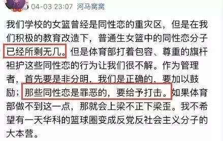
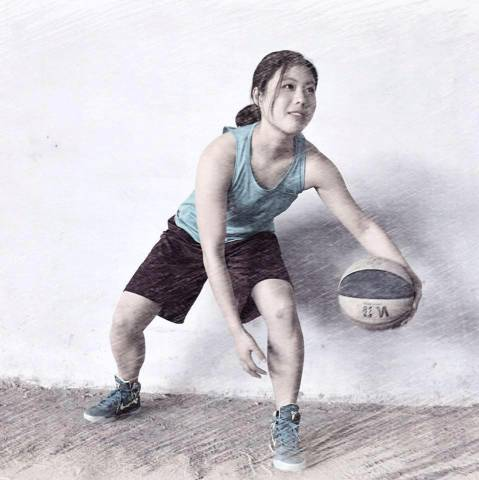
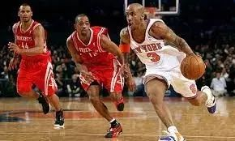
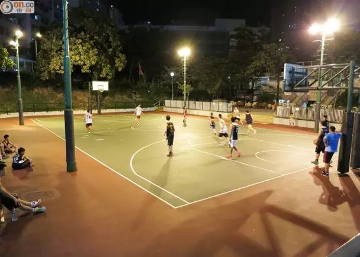
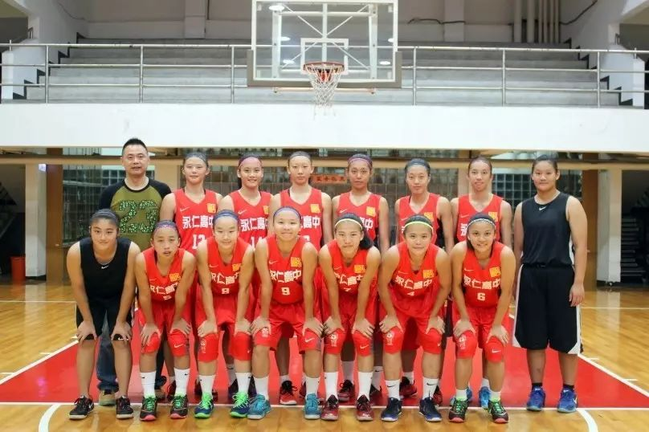

他说，我终于把球场上的女同清除干净l体育与性别
以下文章来源于GLCAC ，作者GLCAC
同城青少年资源中心成立于2006年，是一家专注于校园LGBT群体生存及其校园友善环境的民间团体。更多消息和活动，请关注我们，感谢。
本文是参考台湾教育部性别季刊NO.73期的文章进行整理。
近日，某高校篮球教练与女博士恐同横幅，高举维护中华民族传统伦理，让同性恋远离大学校园。其中有网友爆料，为了达到目的，几位反同的同学和教练曾公开排挤、欺负篮球队里的同性恋同学。当事人凌教练也自认：在我们的积极改造下，普通生中的同性恋分子已经所剩无几。

截图来源：看天下Vista
除了凌教练的球场不欢迎“同性恋”，大多数的校园球场更是性别歧视的灾区。回想自己当年帅气地在校园运动场上打球时，往往遭到其他同学的质疑：
同学B

女生就干干净净的，干嘛弄得满头大汗，臭熏熏的，还会晒黑。女生干嘛不能出汗！男人的汗味就不臭吗？
女生做这么man的运动，你不是同性恋吧？我不是啊！热爱运动跟我性取向有毛关系？

同学T

（图不是小编本人。要撩此妹，联系后台，不谢。）
这小小运动场，作为一个学生锻炼身体的校园公共空间，却几乎成为每个人接受性别规训的重要教育现场。
伤心的小编翻阅湾湾资料，发现台湾近年民间团体投入及积极倡议，性别平等观念在台湾体育界逐渐得到重视。
1
体育与性别？有何关系
体育，是关乎身体的教育，也是学生接受教导/规范身体展演最重要的场域。然而，过往体育与运动教育似乎较少从性别角度思考，使得体育与运动成为性别平等教育的荒漠。这次华科恐同横幅事件更让人深思，大陆性别教育的缺失一定程度上造成对异质性理直气壮地排斥。
运动本身就是高度“性别化”的场域。运动所推崇的竞争，力道，速度，竞赛模式，训练机制，皆与传统对于男性的阳刚气质想像不谋而合。当过去被排除于运动之外的女性进入运动场域时，运动就变成了一个竞技场。过去习以为常的“阳刚特质”和“阴柔特质”，因女子运动员的出现而被打乱。性别特质因而变得流动，为了再巩固二元性别对立，社会期待女性运动员表现出“阴柔特质”的一面，同时要求女性运动员同时受到“阳刚特质”的运动场合的制约。

除了女性有困扰，男性也面临同样困境。有一位生理男性的小文同学，因为性别气质比较阴柔，不擅长球类运动，上体育课分组时，往往陷入没有同伴的窘境；遇到某些需要分段比赛的体育活动，也常常找不到愿意与小文同队的同学。长期下来，小文不但很难融入其他男性学生的运动行列，还会不时受到同学的言语挑衅及骚扰。
2
球场文化中性别问题
炎夏日中，在篮球场上挥汗奔跑，是许多大学生对“青春”所有的代表印记和深刻记忆。然而，球场的使用也潜藏着性别议题，多数篮球场依然是专属于男性的运动空间。可能是因为生理条件上如身高等优势，篮球向来多被认定为是男性专属的运动场域。如果不是体育课或是系队练习，篮球场上很少出现女同学奔驰的身影。爱好篮球的女同学多半选择到无篮框的场地，或是男同学拣选后剩下的空地。

4
场上要阳刚，场下要像个女孩
在台湾近年的高中篮球联赛中看到整齐划一的长发，原来他们被规定必须把头发留长。他们认为运动本身就充满阳刚气质，为了让选手不要太像男生或是太中性，于是要求她们在场下须表现“女孩子家”的“温柔婉约”，因此，希望藉由象征“女性”的长发，以塑造／规训球员的性别气质。另外，除了长发规定。有些教练会鼓励球员穿较女性化的衣服出门，有些队伍则有“裙子日”以确保这些球员展现出“得体”的性别气质，符合社会对女性的期待。
乍听之下这些要求及规定或许没有显得特别不合理，甚至有些人会认为这样的规定是很好的，因为“女生就要像女生”。可真是这样吗？面对身体、气质不符合主流期待的时候，我们是否都以整齐划一的方法，高举所谓“旗帜”、排除“异己”？与大部分人不同的“自己”，被戴上要“隔离”的帽子？你愿意看到吗？

5
运动不在乎性别
运动要在乎的是身体而非性别，男女在运动的意识上基本不会有差别。曾有一位家长说过：“不论男女，都有爱运动和不爱运动的。但在运动场上，女生往往比男生更容易被贴上标签，甚至注意的不是她的技术而是身材或脸蛋。对于我的小孩，我只要求不管从事什么活动，最重要的是态度。”
“更高、更快、更强“作为奥利匹克运动的宗旨之一，全人类所需要、向往和追求的共同目标。我们想方设法让更多的运动员在平等地在运动场上参与。在过程中，无论是性别、性取向、身体、阶级、种族、肤色、地域等的不同者都可参与，共享运动带来的快乐。
性／别大礼包
体育课中如何谈性别？！跟台湾性别平等教育专家来聊聊！4月29日晚上，“台湾性／别教育如何做？｜线上分享”。等你来哟！报名扫下方二维码：
整理资料来源：台湾教育部性别季刊NO.73期 http://b008.hwu.edu.tw/ezfiles/41/1041/img/108/102003657.pdf
1、体育运动性别平权漫漫长路|曾郁娴，毕恒达 p9
2、为什么不能留短发？─谈女性运动员的身体规训|潘郡瑶 p11
3、玫瑰与野百合|陈雅萍 p14
4、Ladies first ：女性优先篮球场|郑育婷 p30
** THE END **
整理：小宝
编辑：萧萧
喜欢这篇文章？扫一扫打赏小编买个篮球吧！